Last updated: 2020-02-24
Checks: 7 0
Knit directory: amnio-cell-free-RNA/
This reproducible R Markdown analysis was created with workflowr (version 1.6.0). The Checks tab describes the reproducibility checks that were applied when the results were created. The Past versions tab lists the development history.
Great! Since the R Markdown file has been committed to the Git repository, you know the exact version of the code that produced these results.
Great job! The global environment was empty. Objects defined in the global environment can affect the analysis in your R Markdown file in unknown ways. For reproduciblity it’s best to always run the code in an empty environment.
The command set.seed(20200224) was run prior to running the code in the R Markdown file. Setting a seed ensures that any results that rely on randomness, e.g. subsampling or permutations, are reproducible.
Great job! Recording the operating system, R version, and package versions is critical for reproducibility.
Nice! There were no cached chunks for this analysis, so you can be confident that you successfully produced the results during this run.
Great job! Using relative paths to the files within your workflowr project makes it easier to run your code on other machines.
Great! You are using Git for version control. Tracking code development and connecting the code version to the results is critical for reproducibility. The version displayed above was the version of the Git repository at the time these results were generated.
Note that you need to be careful to ensure that all relevant files for the analysis have been committed to Git prior to generating the results (you can use wflow_publish or wflow_git_commit). workflowr only checks the R Markdown file, but you know if there are other scripts or data files that it depends on. Below is the status of the Git repository when the results were generated:
Ignored files:
Ignored: .Rhistory
Ignored: .Rproj.user/
Ignored: code/salmon-limma-voom.nb.html
Ignored: data/190717_A00692_0021_AHLLHFDSXX/
Ignored: data/GONE4.10.13.txt
Ignored: data/HK_genes.txt
Ignored: data/IPA molecule summary.xls
Ignored: data/IPA-molecule-summary.csv
Ignored: data/brain-development-geneset.txt
Ignored: data/joindata.csv
Ignored: data/metadata.csv
Ignored: data/samples.csv
Ignored: output/c2Ens.RData
Ignored: output/c5Ens.RData
Ignored: output/exclude-CMV11/
Ignored: output/hEns.RData
Ignored: output/keggEns.RData
Ignored: output/salmon-limma-voom-c5Cam.csv
Ignored: output/salmon-limma-voom.Rmd/
Ignored: output/salmon-limma-voom.csv
Ignored: output/salmon-ruvseq-edger.csv
Untracked files:
Untracked: analysis/salmon-ruvseq-edger.Rmd
Unstaged changes:
Modified: analysis/index.Rmd
Note that any generated files, e.g. HTML, png, CSS, etc., are not included in this status report because it is ok for generated content to have uncommitted changes.
These are the previous versions of the R Markdown and HTML files. If you’ve configured a remote Git repository (see ?wflow_git_remote), click on the hyperlinks in the table below to view them.
| File | Version | Author | Date | Message |
|---|---|---|---|---|
| Rmd | 5a3d551 | Jovana Maksimovic | 2020-02-24 | wflow_publish(“analysis/salmon-limma-voom-exclude-CMV11.Rmd”) |
Warning: multiple methods tables found for 'splitAsList'The data was quasi-mapped and quantified using Salmon (v0.14.1) with the GENCODE (v31) human (hg38) transcriptome and decoy sequences. The mapping statistics can be found here. There appeared to be an issue with adapter contamination, with all samples having relatively low mapping percentages.
Load sample information and file names.
[1] TRUELoad all the metadata and associate with samples.
Date.x Amniocollectiodate Tube.ID Record.ID Site.x matchedpair
10 19/03/2018 20/11/2017 63121013 76015429 Leuven L1
11 22/01/2018 22/01/2018 63184810 63460885 Leuven L1
12 6/02/2018 9/10/2007 63148015 60667570 Leuven L2
13 15/11/2017 15/11/2017 63114616 74350539 Leuven L2
14 11/01/2018 11/09/2017 62987267 77297935 Leuven L3
15 2-Jan 2/01/2018 63144744 60308517 Leuven L3
GA.at.amnio Sex CMVresult Site.y Date.y Location AFS cell CMV.result
10 21 F pos LVN 19/03/2018 Olaf Bag 3,4 2 NA
11 21 F neg LVN 22/01/2018 Olaf Bag 2,3 2 NA
12 23 F neg LVN 6/02/2018 Olaf Bag 4 2 NA
13 23 F pos LVN 15/11/2017 Olaf bag 1,2 2 NA
14 22 F pos LVN 11/01/2018 Olaf bag 1 2 NA
15 21 F neg LVN 2-Jan Olaf bag 1,4 2 NA
GA ID.post.extraction TestResult.x MatchedPair.x TestResult.y MatchedPair.y
10 NA CMV30 pos L1 pos L1
11 NA CMV31 neg L1 neg L1
12 NA CMV8 neg L2 neg L2
13 NA CMV9 pos L2 pos L2
14 NA CMV26 pos L3 pos L3
15 NA CMV27 neg L3 neg L3Exclude CMV11 and its pairs.
targets <- targets[targets$matchedpair != "NC1",]
files <- files[names(files) %in% targets$ID.post.extraction]Associate transcripts with gene IDs for gene-level summarization.
DataFrame with 216741 rows and 2 columns
tx_id gene_id
<character> <character>
1 ENST00000000233 ENSG00000004059
2 ENST00000000412 ENSG00000003056
3 ENST00000000442 ENSG00000173153
4 ENST00000001008 ENSG00000004478
5 ENST00000001146 ENSG00000003137
... ... ...
216737 LRG_96t1 LRG_96
216738 LRG_97t1 LRG_97
216739 LRG_98t1 LRG_98
216740 LRG_992t1 LRG_992
216741 LRG_99t1 LRG_99Import gene-level counts and abundances.
reading in files with read_tsv1 2 3 4 5 6 7 8 9 10 11 12 13 14 15 16
transcripts missing from tx2gene: 29910
summarizing abundance
summarizing counts
summarizing length CMV30 CMV31 CMV8 CMV9 CMV26
ENSG00000000003 387.67984 225.216498 298.342689 355.179300 227.0949540
ENSG00000000005 0.00000 0.000000 3.550615 0.000000 0.7180238
ENSG00000000419 92.31579 121.017131 117.820307 111.218130 125.6190125
ENSG00000000457 915.73654 481.964174 366.402817 324.751926 431.4025005
ENSG00000000460 141.21661 162.084283 112.853916 142.510657 166.3598834
ENSG00000000938 22.86874 7.141112 3.261153 1.763487 3.6507249
CMV27 CMV14 CMV15 CMV20 CMV21 CMV1
ENSG00000000003 234.91452 458.116554 210.816520 238.60416 238.698190 185.62645
ENSG00000000005 0.00000 12.469464 1.984375 0.00000 0.000000 0.00000
ENSG00000000419 113.49505 204.200807 162.940231 103.02103 128.172157 101.39935
ENSG00000000457 453.36214 536.697406 386.603609 495.43968 356.886140 275.06946
ENSG00000000460 84.42015 98.036005 138.470692 185.59329 105.317048 65.34141
ENSG00000000938 0.00000 8.162707 2.951351 60.31426 3.954523 11.21412
CMV2 CMV3 CMV4 CMV18 CMV19
ENSG00000000003 228.5979 161.27765 178.916117 473.857801 404.37983
ENSG00000000005 0.0000 0.00000 0.000000 0.000000 1.26227
ENSG00000000419 124.7035 81.85738 60.229835 120.278048 118.72332
ENSG00000000457 292.8678 260.99257 219.402232 509.896436 320.78020
ENSG00000000460 145.9779 18.66188 70.672753 66.007521 122.96628
ENSG00000000938 0.0000 13.25943 5.908834 9.220484 0.00000Set up DGElist object for downstream analysis.
An object of class "DGEList"
$counts
CMV30 CMV31 CMV8 CMV9 CMV26 CMV27
ENSG00000000003 387.67984 225.2165 298.342689 355.1793 227.0949540 234.91452
ENSG00000000005 0.00000 0.0000 3.550615 0.0000 0.7180238 0.00000
ENSG00000000419 92.31579 121.0171 117.820307 111.2181 125.6190125 113.49505
ENSG00000000457 915.73654 481.9642 366.402817 324.7519 431.4025005 453.36214
ENSG00000000460 141.21661 162.0843 112.853916 142.5107 166.3598834 84.42015
CMV14 CMV15 CMV20 CMV21 CMV1 CMV2
ENSG00000000003 458.11655 210.816520 238.6042 238.6982 185.62645 228.5979
ENSG00000000005 12.46946 1.984375 0.0000 0.0000 0.00000 0.0000
ENSG00000000419 204.20081 162.940231 103.0210 128.1722 101.39935 124.7035
ENSG00000000457 536.69741 386.603609 495.4397 356.8861 275.06946 292.8678
ENSG00000000460 98.03601 138.470692 185.5933 105.3170 65.34141 145.9779
CMV3 CMV4 CMV18 CMV19
ENSG00000000003 161.27765 178.91612 473.85780 404.37983
ENSG00000000005 0.00000 0.00000 0.00000 1.26227
ENSG00000000419 81.85738 60.22983 120.27805 118.72332
ENSG00000000457 260.99257 219.40223 509.89644 320.78020
ENSG00000000460 18.66188 70.67275 66.00752 122.96628
57258 more rows ...
$samples
group lib.size norm.factors
CMV30 1 12910571 1
CMV31 1 9882210 1
CMV8 1 10018352 1
CMV9 1 9653680 1
CMV26 1 8468332 1
11 more rows ...
$genes
DataFrame with 57263 rows and 4 columns
gene_id symbol entrezid length
<character> <character> <integer> <numeric>
1 ENSG00000000003 TSPAN6 7105 1687.80937912955
2 ENSG00000000005 TNMD 64102 786.943850929716
3 ENSG00000000419 DPM1 8813 774.869567962554
4 ENSG00000000457 SCYL3 57147 3438.52092265735
5 ENSG00000000460 C1orf112 55732 1923.59966456254
... ... ... ... ...
57259 ENSG00000283695 CTD-2331H12.9 NA 62
57260 ENSG00000283696 RP11-122G18.12 NA 915.59661832292
57261 ENSG00000283697 RP5-937E21.8 101928917 1332.26276351927
57262 ENSG00000283698 RP11-606M12.1 NA 377.875
57263 ENSG00000283699 MIR4481 100616320 61
$group
[1] "pos" "neg" "neg" "pos" "pos" "neg" "neg" "pos" "pos" "neg" "pos" "neg"
[13] "neg" "pos" "neg" "pos"Genes that do not have an adequate number of reads in any sample should be filtered out prior to downstream analyses. From a biological perspective, genes that are not expressed at a biologically meaningful level in any condition are not of interest. Statistically, we get a better estimate of the mean-variance relationship in the data and reduce the number of statistical tests that are performes during differential expression analyses.
Filter out lowly expressed genes and calculate TMM normalisation factors.
An object of class "DGEList"
$counts
CMV30 CMV31 CMV8 CMV9 CMV26 CMV27
ENSG00000000003 387.67984 225.2165 298.3427 355.1793 227.0950 234.91452
ENSG00000000419 92.31579 121.0171 117.8203 111.2181 125.6190 113.49505
ENSG00000000457 915.73654 481.9642 366.4028 324.7519 431.4025 453.36214
ENSG00000000460 141.21661 162.0843 112.8539 142.5107 166.3599 84.42015
ENSG00000000971 82.17778 197.0825 153.7405 167.1849 119.0158 119.51194
CMV14 CMV15 CMV20 CMV21 CMV1 CMV2
ENSG00000000003 458.11655 210.8165 238.6042 238.6982 185.62645 228.59788
ENSG00000000419 204.20081 162.9402 103.0210 128.1722 101.39935 124.70353
ENSG00000000457 536.69741 386.6036 495.4397 356.8861 275.06946 292.86782
ENSG00000000460 98.03601 138.4707 185.5933 105.3170 65.34141 145.97787
ENSG00000000971 154.99356 269.9742 157.1890 116.1408 151.30926 77.17604
CMV3 CMV4 CMV18 CMV19
ENSG00000000003 161.27765 178.91612 473.85780 404.37983
ENSG00000000419 81.85738 60.22983 120.27805 118.72332
ENSG00000000457 260.99257 219.40223 509.89644 320.78020
ENSG00000000460 18.66188 70.67275 66.00752 122.96628
ENSG00000000971 33.51404 40.52353 53.60467 79.73268
14502 more rows ...
$samples
group lib.size norm.factors
CMV30 1 12910571 1.0870637
CMV31 1 9882210 1.0997846
CMV8 1 10018352 0.9758560
CMV9 1 9653680 0.9871855
CMV26 1 8468332 1.0885979
11 more rows ...
$genes
DataFrame with 14507 rows and 4 columns
gene_id symbol entrezid length
<character> <character> <integer> <numeric>
1 ENSG00000000003 TSPAN6 7105 1687.80937912955
2 ENSG00000000419 DPM1 8813 774.869567962554
3 ENSG00000000457 SCYL3 57147 3438.52092265735
4 ENSG00000000460 C1orf112 55732 1923.59966456254
5 ENSG00000000971 CFH 3075 3910.54902355018
... ... ... ... ...
14503 ENSG00000283512 CTD-2547E10.6 NA 297.147205723571
14504 ENSG00000283553 AL161905.1 8464 342.351034385983
14505 ENSG00000283617 AC074141.1 84765 1878.89923902746
14506 ENSG00000283620 ZNF48 197407 2914.99181955305
14507 ENSG00000283633 AC005301.9 NA 1377.2135
$group
[1] "pos" "neg" "neg" "pos" "pos" "neg" "neg" "pos" "pos" "neg" "pos" "neg"
[13] "neg" "pos" "neg" "pos"Plotting the distribution log-CPM values shows that a majority of genes within each sample are either not expressed or lowly-expressed with log-CPM values that are small or negative.
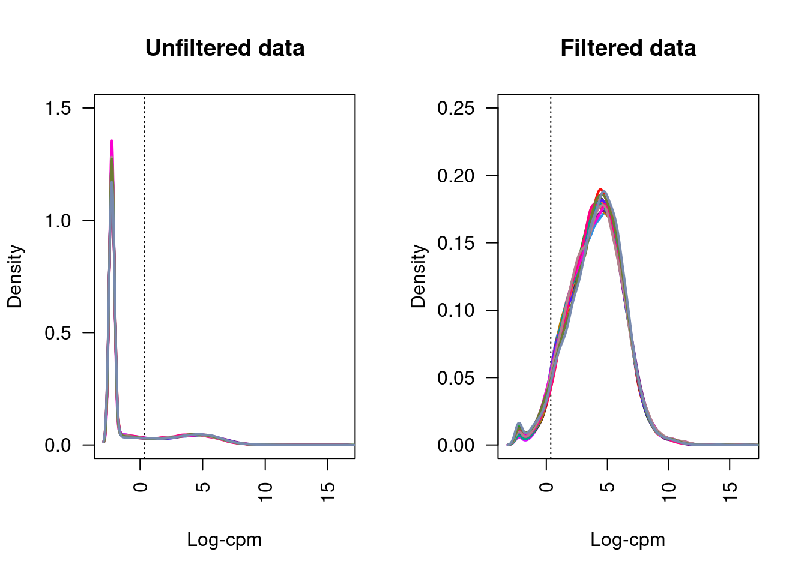
Although in excess of 30 million reads were obrained per sample, we can see that after mapping and quantification of gene expression the effective library size is less than 13 million for all samples, with most samples having an effective library size of 10 million or less. This suggests that we we likely only capturing the most abundant cfRNAs.
It is assumed that all samples should have a similar range and distribution of expression values. The unnormalised data looks fairly uniform between samples, although TMM normalisation further improves this.
The relative log expression (RLE) plot shows within sample variability, which looks reasonable for all samples, with CMV11 and CMV19 a bit more variable than the other samples. The final plot shows the mean variance relationship with some of the most variable genes indicated by their gene symbol on the plot. Despite the relatively low library sizes, the data looks to be of good quality.
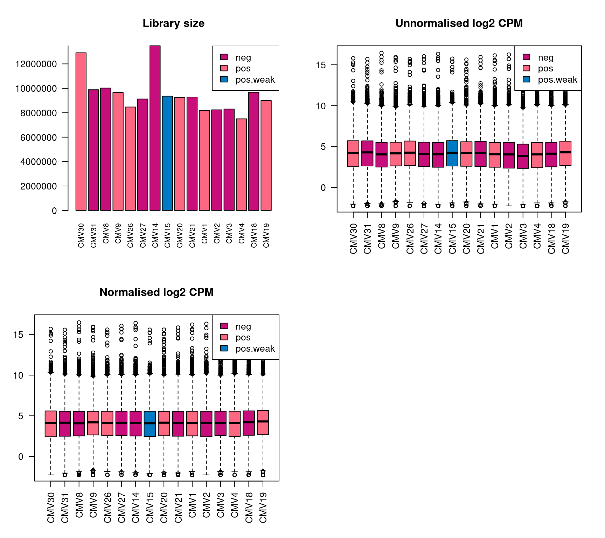
Multi-dimensional scaling (MDS) plots show the largest sources of variation in the data. They are a good way of exploring the relationships between the samples and identifying structure in the data. The following series of MDS plots examines the first four principal components. The samples are coloured by various known features of the samples such as CMV result and foetal sex. The MDS plots do not show the samples obviously clustering by any of the known features of the data. This indicates that we are unlikely to find many differentially expressed genes between CMV and normal samples.
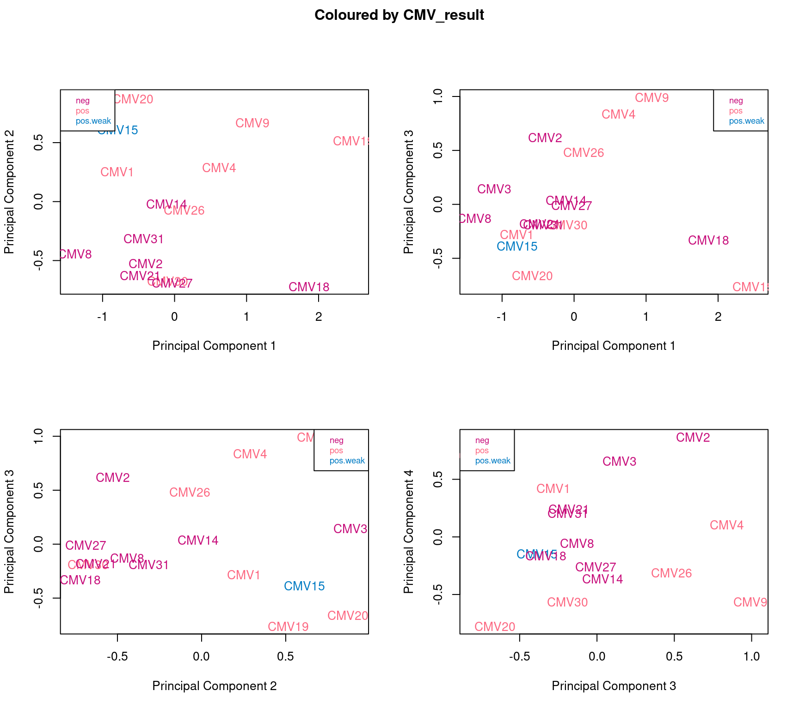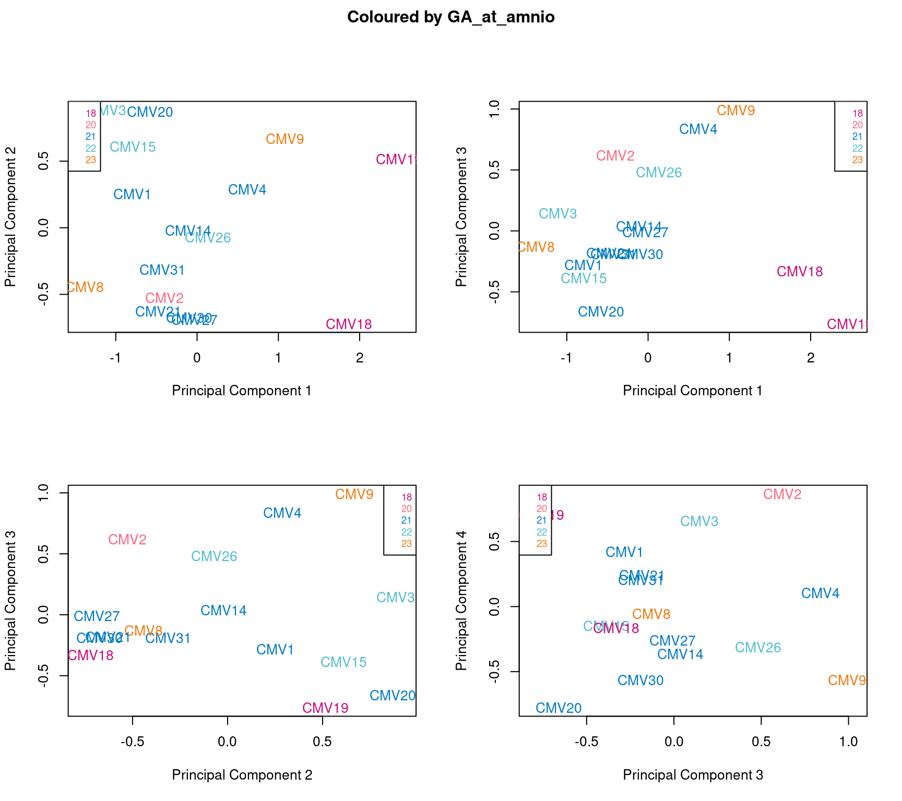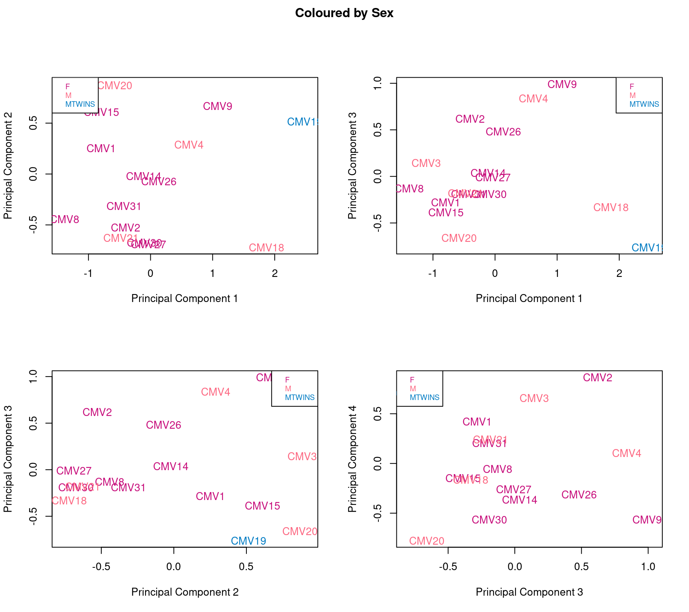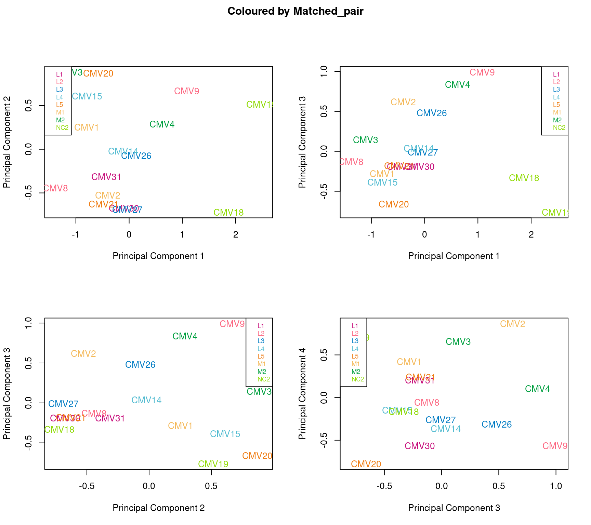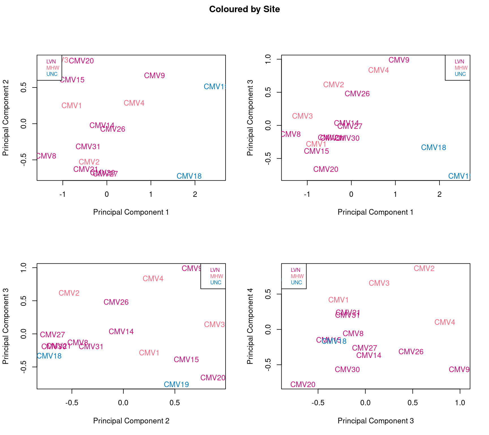
Due to the variability in the data, the TMM normalised data was transformed using voomWithQualityWeights. This takes into account the differing library sizes and the mean variance relationship in the data as well as calculating sample-specific quality weights. Linear models were fit in limma, taking into account the voom weights. The CMV positive samples were compared to the CMV negative (normal) samples. A summary of the numbers of differentially expressed genes is shown below, as well as the top 10 differentially expressed genes. The full results tables were exported as csv files.
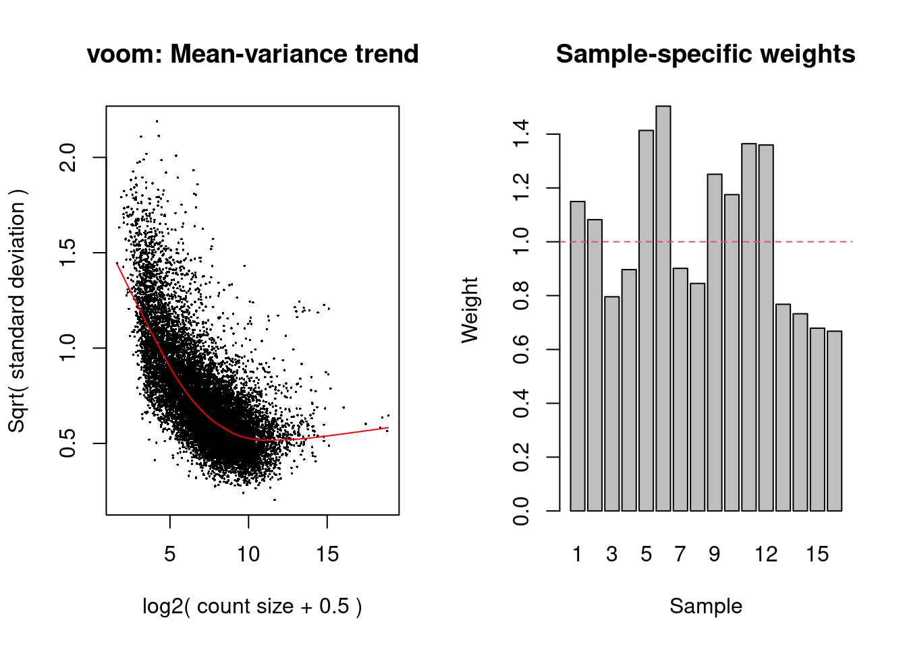
pos - neg
Down 0
NotSig 14507
Up 0 gene_id symbol entrezid length logFC AveExpr
ENSG00000068024 ENSG00000068024 HDAC4 9759 3328.429 1.3314145 4.834030
ENSG00000138642 ENSG00000138642 HERC6 55008 3571.573 1.9155134 4.462012
ENSG00000082212 ENSG00000082212 ME2 4200 3190.270 1.6700573 3.237000
ENSG00000146963 ENSG00000146963 LUC7L2 51631 2186.005 0.5450632 6.635761
ENSG00000137628 ENSG00000137628 DDX60 55601 4445.532 1.4965441 5.622431
ENSG00000157601 ENSG00000157601 MX1 4599 2357.838 2.0141798 6.057546
ENSG00000092421 ENSG00000092421 SEMA6A 57556 4118.364 1.6423025 2.297085
ENSG00000107201 ENSG00000107201 DDX58 23586 4541.514 1.1968469 5.250144
ENSG00000105227 ENSG00000105227 PRX 57716 4616.311 -0.9308428 6.300932
ENSG00000054690 ENSG00000054690 PLEKHH1 57475 5023.485 0.8928175 3.600790
t P.Value adj.P.Val B
ENSG00000068024 6.415314 2.189170e-05 0.1818520 2.996767
ENSG00000138642 6.030403 4.241798e-05 0.1818520 2.237950
ENSG00000082212 5.835473 5.609185e-05 0.1818520 1.927428
ENSG00000146963 5.677146 7.311488e-05 0.1818520 1.900324
ENSG00000137628 5.663686 8.048587e-05 0.1818520 1.823207
ENSG00000157601 5.747357 9.463228e-05 0.1818520 1.708785
ENSG00000092421 6.270885 2.755305e-05 0.1818520 1.650463
ENSG00000107201 5.444873 1.105738e-04 0.1818520 1.518636
ENSG00000105227 -5.221456 1.610181e-04 0.1885328 1.142711
ENSG00000054690 5.238047 1.552936e-04 0.1885328 1.100434The following plots show the expression of the top 9 ranked differentially expressed genes for CMV negative and CMV positive samples. Although there is significant variability within the groups and the log2 fold changes are not large, there are obvious differences in expression for the top ranked genes.
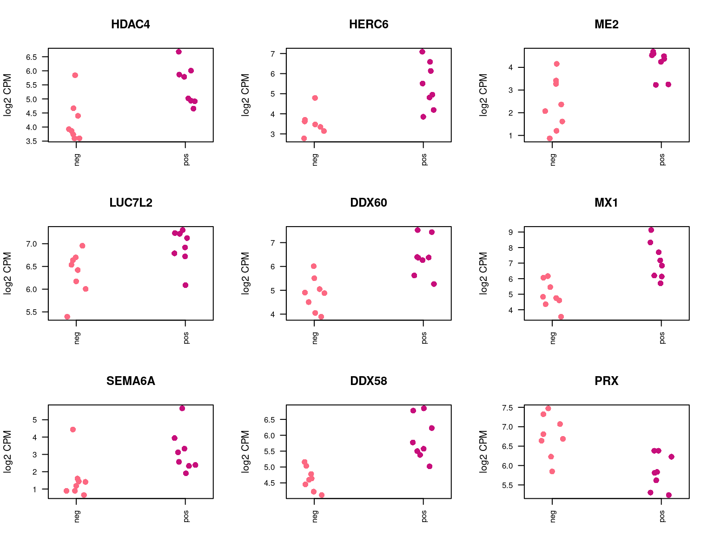
Testing for enrichment of GO categories for top 100 ranked genes.
Term Ont N DE P.DE
GO:0071357 cellular response to type I interferon BP 68 13 1.343783e-15
GO:0060337 type I interferon signaling pathway BP 68 13 1.343783e-15
GO:0034340 response to type I interferon BP 72 13 2.967747e-15
GO:0009615 response to virus BP 224 18 2.412686e-14
GO:0043207 response to external biotic stimulus BP 546 24 4.881673e-13
GO:0051707 response to other organism BP 546 24 4.881673e-13
GO:0051607 defense response to virus BP 166 15 7.583181e-13
GO:0009607 response to biotic stimulus BP 574 24 1.429821e-12
GO:0045087 innate immune response BP 573 23 1.052664e-11
GO:0006952 defense response BP 937 27 2.436139e-10
GO:0098542 defense response to other organism BP 267 15 6.790946e-10
GO:0060333 interferon-gamma-mediated signaling pathway BP 67 9 1.060210e-09
GO:0019221 cytokine-mediated signaling pathway BP 517 19 3.756950e-09
GO:0050688 regulation of defense response to virus BP 59 8 8.690879e-09
GO:0034097 response to cytokine BP 809 23 9.150055e-09
GO:0071345 cellular response to cytokine stimulus BP 751 22 1.199827e-08
GO:0009605 response to external stimulus BP 1389 30 1.826786e-08
GO:0043900 regulation of multi-organism process BP 292 14 2.008115e-08
GO:0051704 multi-organism process BP 1657 32 7.497146e-08
GO:0071346 cellular response to interferon-gamma BP 116 9 1.416446e-07Gene set testing helps us to interpret the results of a differential expression analysis. The camera function performs a competitive test to assess whether the genes in a given set are highly ranked in terms of differential expression relative to genes that are not in the set. We have tested several collections of gene sets from the Broad Institute’s Molecular Signatures Database MSigDB.
Build gene set indexes.
[1] "Loading MSigDB Gene Sets ... "
[1] "Loaded gene sets for the collection h ..."
[1] "Indexed the collection h ..."
[1] "Created annotation for the collection h ..."
[1] "Loaded gene sets for the collection c2 ..."
[1] "Indexed the collection c2 ..."
[1] "Created annotation for the collection c2 ..."
[1] "Loaded gene sets for the collection c5 ..."
[1] "Indexed the collection c5 ..."
[1] "Created annotation for the collection c5 ..."
[1] "Building KEGG pathways annotation object ... "The GO gene sets consist of genes annotated by the same GO terms.
NGenes
GO_RESPONSE_TO_TYPE_I_INTERFERON 49
GO_RESPONSE_TO_INTERFERON_GAMMA 85
GO_INTERFERON_GAMMA_MEDIATED_SIGNALING_PATHWAY 51
GO_CELLULAR_RESPONSE_TO_INTERFERON_GAMMA 70
GO_CYTOSOLIC_RIBOSOME 103
GO_ANTIGEN_PROCESSING_AND_PRESENTATION_OF_ENDOGENOUS_PEPTIDE_ANTIGEN 11
GO_ESTABLISHMENT_OF_PROTEIN_LOCALIZATION_TO_ENDOPLASMIC_RETICULUM 101
GO_RIBOSOMAL_SUBUNIT 155
GO_TRANSLATIONAL_INITIATION 140
GO_ANTIGEN_PROCESSING_AND_PRESENTATION_OF_ENDOGENOUS_ANTIGEN 13
Direction
GO_RESPONSE_TO_TYPE_I_INTERFERON Up
GO_RESPONSE_TO_INTERFERON_GAMMA Up
GO_INTERFERON_GAMMA_MEDIATED_SIGNALING_PATHWAY Up
GO_CELLULAR_RESPONSE_TO_INTERFERON_GAMMA Up
GO_CYTOSOLIC_RIBOSOME Down
GO_ANTIGEN_PROCESSING_AND_PRESENTATION_OF_ENDOGENOUS_PEPTIDE_ANTIGEN Up
GO_ESTABLISHMENT_OF_PROTEIN_LOCALIZATION_TO_ENDOPLASMIC_RETICULUM Down
GO_RIBOSOMAL_SUBUNIT Down
GO_TRANSLATIONAL_INITIATION Down
GO_ANTIGEN_PROCESSING_AND_PRESENTATION_OF_ENDOGENOUS_ANTIGEN Up
PValue
GO_RESPONSE_TO_TYPE_I_INTERFERON 7.716554e-22
GO_RESPONSE_TO_INTERFERON_GAMMA 2.549214e-11
GO_INTERFERON_GAMMA_MEDIATED_SIGNALING_PATHWAY 2.710917e-11
GO_CELLULAR_RESPONSE_TO_INTERFERON_GAMMA 3.777290e-11
GO_CYTOSOLIC_RIBOSOME 2.825260e-08
GO_ANTIGEN_PROCESSING_AND_PRESENTATION_OF_ENDOGENOUS_PEPTIDE_ANTIGEN 3.211666e-08
GO_ESTABLISHMENT_OF_PROTEIN_LOCALIZATION_TO_ENDOPLASMIC_RETICULUM 3.771980e-08
GO_RIBOSOMAL_SUBUNIT 1.545663e-07
GO_TRANSLATIONAL_INITIATION 1.662621e-07
GO_ANTIGEN_PROCESSING_AND_PRESENTATION_OF_ENDOGENOUS_ANTIGEN 1.965865e-07
FDR
GO_RESPONSE_TO_TYPE_I_INTERFERON 4.754940e-18
GO_RESPONSE_TO_INTERFERON_GAMMA 5.568223e-08
GO_INTERFERON_GAMMA_MEDIATED_SIGNALING_PATHWAY 5.568223e-08
GO_CELLULAR_RESPONSE_TO_INTERFERON_GAMMA 5.818916e-08
GO_CYTOSOLIC_RIBOSOME 3.298381e-05
GO_ANTIGEN_PROCESSING_AND_PRESENTATION_OF_ENDOGENOUS_PEPTIDE_ANTIGEN 3.298381e-05
GO_ESTABLISHMENT_OF_PROTEIN_LOCALIZATION_TO_ENDOPLASMIC_RETICULUM 3.320420e-05
GO_RIBOSOMAL_SUBUNIT 1.138341e-04
GO_TRANSLATIONAL_INITIATION 1.138341e-04
GO_ANTIGEN_PROCESSING_AND_PRESENTATION_OF_ENDOGENOUS_ANTIGEN 1.211366e-04The hallmark gene sets are coherently expressed signatures derived by aggregating many MSigDB gene sets to represent well-defined biological states or processes.
NGenes Direction PValue FDR
HALLMARK_INTERFERON_ALPHA_RESPONSE 87 Up 2.658967e-32 1.329483e-30
HALLMARK_INTERFERON_GAMMA_RESPONSE 160 Up 7.502871e-25 1.875718e-23
HALLMARK_MYC_TARGETS_V1 199 Down 1.645598e-05 2.742663e-04
HALLMARK_INFLAMMATORY_RESPONSE 123 Up 5.358906e-05 6.698632e-04
HALLMARK_COMPLEMENT 151 Up 2.267913e-04 2.267124e-03
HALLMARK_OXIDATIVE_PHOSPHORYLATION 200 Down 2.720549e-04 2.267124e-03
HALLMARK_KRAS_SIGNALING_UP 145 Up 3.228038e-04 2.305742e-03
HALLMARK_IL6_JAK_STAT3_SIGNALING 50 Up 4.447327e-04 2.779579e-03
HALLMARK_TNFA_SIGNALING_VIA_NFKB 167 Up 1.174145e-03 6.523028e-03
HALLMARK_ALLOGRAFT_REJECTION 111 Up 7.351773e-03 3.675886e-02Barcode plots show the enrichment of gene sets amongst high or low ranked genes. The following barcode plots show the enrichment of the top 4 hallmark gene sets amongst the genes differentially expressed between CMV negative and CMV positive samples.
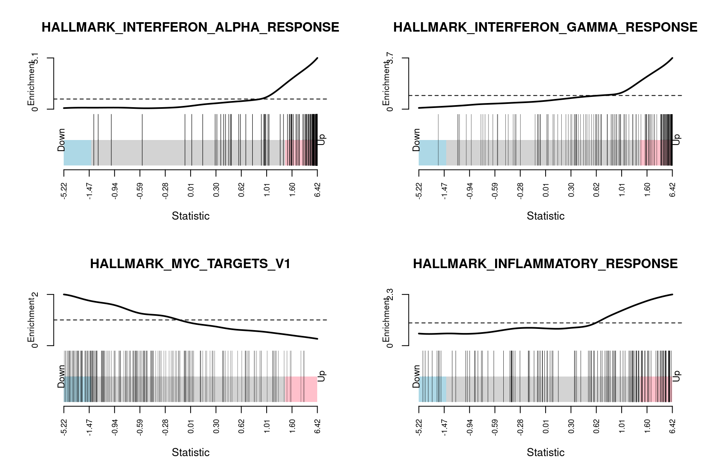
[[1]]
NULL
[[2]]
NULL
[[3]]
NULL
[[4]]
NULLThe curated gene sets are compiled from online pathway databases, publications in PubMed, and knowledge of domain experts.
NGenes Direction PValue
MOSERLE_IFNA_RESPONSE 29 Up 3.577504e-37
BROWNE_INTERFERON_RESPONSIVE_GENES 59 Up 1.974037e-32
HECKER_IFNB1_TARGETS 66 Up 3.630429e-30
FARMER_BREAST_CANCER_CLUSTER_1 19 Up 5.101749e-24
SANA_RESPONSE_TO_IFNG_UP 54 Up 8.245471e-23
BOSCO_INTERFERON_INDUCED_ANTIVIRAL_MODULE 65 Up 1.080498e-20
SANA_TNF_SIGNALING_UP 65 Up 1.012451e-19
REACTOME_INTERFERON_ALPHA_BETA_SIGNALING 46 Up 1.269319e-19
DAUER_STAT3_TARGETS_DN 49 Up 2.359998e-19
EINAV_INTERFERON_SIGNATURE_IN_CANCER 26 Up 5.038712e-19
FDR
MOSERLE_IFNA_RESPONSE 1.339775e-33
BROWNE_INTERFERON_RESPONSIVE_GENES 3.696384e-29
HECKER_IFNB1_TARGETS 4.531986e-27
FARMER_BREAST_CANCER_CLUSTER_1 4.776513e-21
SANA_RESPONSE_TO_IFNG_UP 6.175858e-20
BOSCO_INTERFERON_INDUCED_ANTIVIRAL_MODULE 6.744108e-18
SANA_TNF_SIGNALING_UP 5.416615e-17
REACTOME_INTERFERON_ALPHA_BETA_SIGNALING 5.942001e-17
DAUER_STAT3_TARGETS_DN 9.820214e-17
EINAV_INTERFERON_SIGNATURE_IN_CANCER 1.883072e-16The following barcode plots show the enrichment of the top 4 curated gene sets amongst the genes differentially expressed between CMV negative and CMV positive samples.
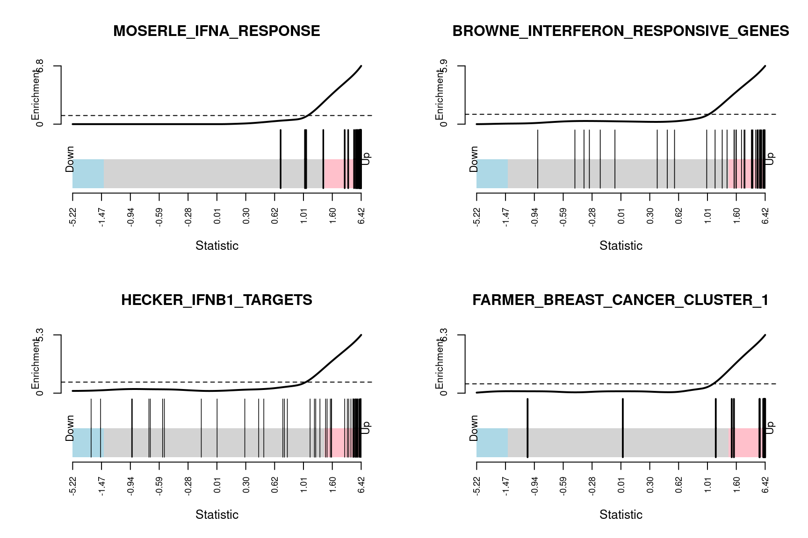
[[1]]
NULL
[[2]]
NULL
[[3]]
NULL
[[4]]
NULLThe following heatmap shows the expression level of the genes in the top ranked curated gene set across all the samples.
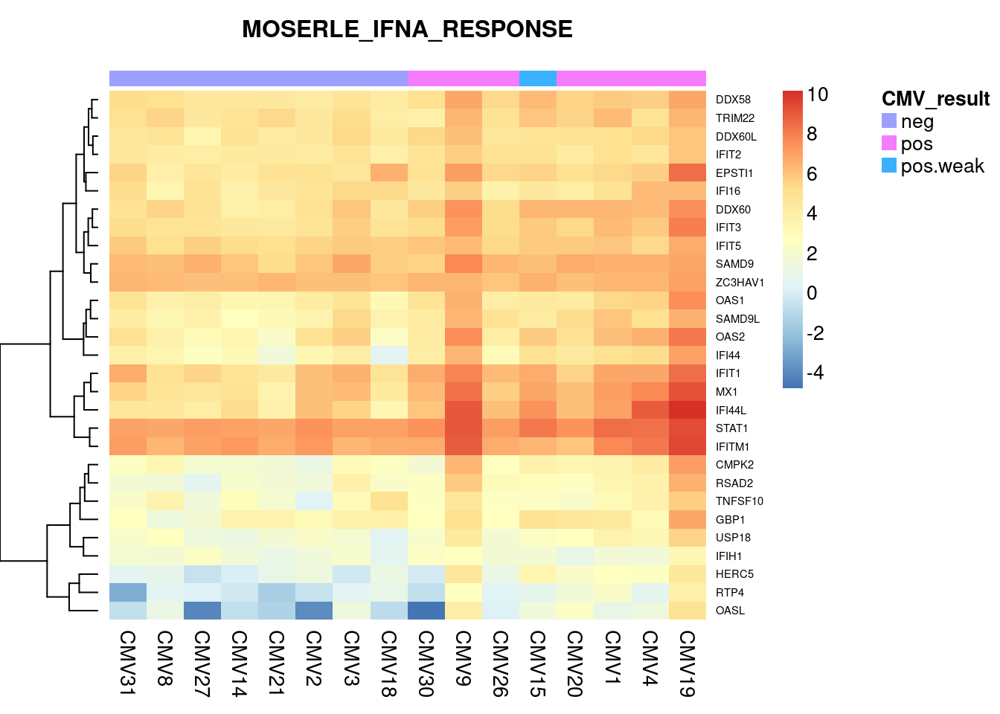
The Kegg gene sets encompass all of the pathways defined in the Kegg pathway database.
NGenes Direction PValue FDR
Ribosome 131 Down 7.959135e-08 2.115846e-05
Autoimmune thyroid disease 13 Up 1.454190e-07 2.115846e-05
Allograft rejection 12 Up 2.533902e-07 2.457885e-05
Graft-versus-host disease 13 Up 1.019943e-06 7.420085e-05
Type I diabetes mellitus 16 Up 3.644211e-06 2.120931e-04
Antigen processing and presentation 45 Up 6.811466e-06 3.303561e-04
Staphylococcus aureus infection 21 Up 1.211955e-04 5.038269e-03
Leishmaniasis 46 Up 1.562498e-04 5.683587e-03
Oxidative phosphorylation 122 Down 2.174695e-04 6.458659e-03
Huntington's disease 178 Down 2.359560e-04 6.458659e-03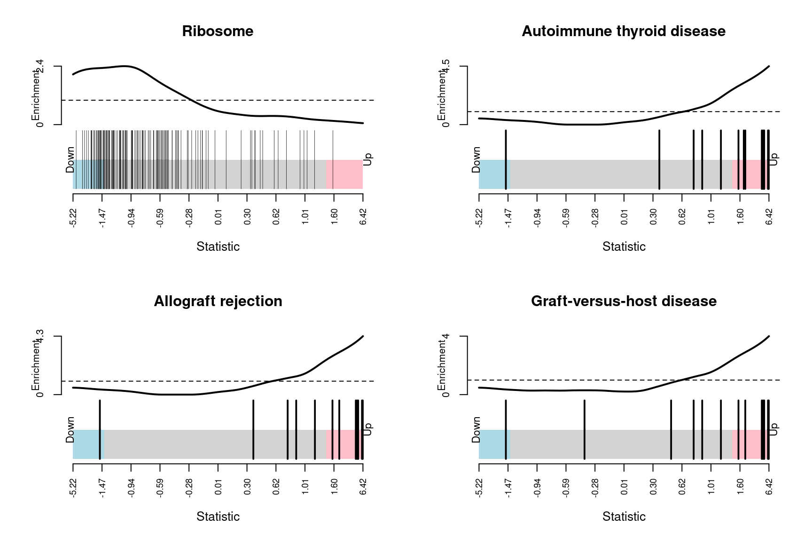
[[1]]
NULL
[[2]]
NULL
[[3]]
NULL
[[4]]
NULLThe following heatmap shows the expression level of the genes in the top ranked kegg pathway across all the samples.
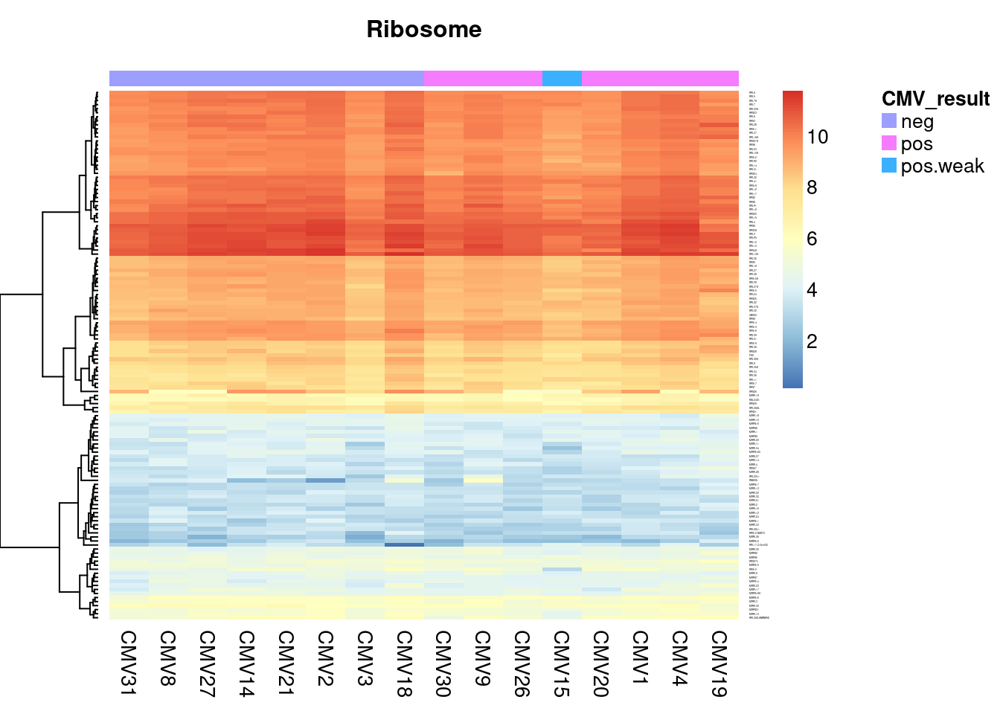
The GONE gene set is not significantly enriched for differentially expressed genes in our data.
gone <- read_delim(file = here("data/GONE4.10.13.txt"), delim = "\t")Warning: Duplicated column names deduplicated: 'ID' => 'ID_1' [10]Parsed with column specification:
cols(
Ontology = col_character(),
Protein = col_character(),
Qualifier = col_character(),
GO = col_character(),
Name = col_character(),
`Evidence Code` = col_character(),
Reference = col_character(),
ID = col_double(),
With = col_character(),
ID_1 = col_character(),
Quotation = col_character(),
Tissue = col_character(),
`Name of protein/gene` = col_character(),
Species = col_character(),
Date = col_character()
)Warning: 569 parsing failures.
row col expected actual file
16 -- 15 columns 14 columns '/oshlack_lab/jovana.maksimovic/projects/MCRI/lisa.hui/amnio-cell-free-RNA/data/GONE4.10.13.txt'
17 -- 15 columns 14 columns '/oshlack_lab/jovana.maksimovic/projects/MCRI/lisa.hui/amnio-cell-free-RNA/data/GONE4.10.13.txt'
18 -- 15 columns 14 columns '/oshlack_lab/jovana.maksimovic/projects/MCRI/lisa.hui/amnio-cell-free-RNA/data/GONE4.10.13.txt'
19 -- 15 columns 14 columns '/oshlack_lab/jovana.maksimovic/projects/MCRI/lisa.hui/amnio-cell-free-RNA/data/GONE4.10.13.txt'
20 -- 15 columns 14 columns '/oshlack_lab/jovana.maksimovic/projects/MCRI/lisa.hui/amnio-cell-free-RNA/data/GONE4.10.13.txt'
... ... .......... .......... ................................................................................................
See problems(...) for more details.gonePmids <- select(org.Hs.eg.db, keys = as.character(unique(gone$ID[!is.na(gone$ID)])),
columns = c("PMID", "ENTREZID"), keytype = "PMID")'select()' returned 1:many mapping between keys and columnsgoneIdx <- ids2indices(gonePmids$ENTREZID, v$genes$entrezid)
roast(v, goneIdx, design, contrast = cont, trend.var = TRUE) NGenes PropDown PropUp Direction PValue FDR PValue.Mixed FDR.Mixed
Set1 964 0.06639004 0.07676349 Up 0.928 0.928 0.615 0.615The IPA gene set is significantly enriched for differentially expressed genes in our data.
ipa <- read_csv(file = here("data/IPA-molecule-summary.csv"))Parsed with column specification:
cols(
Symbol = col_character(),
`Entrez Gene Name` = col_character(),
`bioGPS human > 30MoM` = col_character(),
`Entrez Gene summary` = col_character(),
`GeneCards summary` = col_character(),
`UniPrtoKB function` = col_character(),
`Entrez Gene ID for Human` = col_double(),
Ensembl = col_character(),
`Expr Intensity/RPKM/FPKM/Counts` = col_double(),
`Expr Log Ratio` = col_double(),
`Expr p-value` = col_double(),
`Expr False Discovery Rate (q-value)` = col_double(),
Location = col_character(),
`Type(s)` = col_character(),
`Biomarker Application(s)` = col_character(),
`Drug(s)` = col_character()
)ipaIdx <- ids2indices(ipa$Ensembl, rownames(v))
roast(v, ipaIdx, design, contrast = cont, trend.var = TRUE) NGenes PropDown PropUp Direction PValue FDR PValue.Mixed FDR.Mixed
Set1 58 0.1206897 0.8793103 Up 0.002 0.002 0.002 0.002Although the effective library sizes were low, the data is generally of good quality. Due to the variability in the data, once CMV11 and its pairs were excluded from the analysis, we did not find any individually significant differentially expressed genes at FDR < 0.1. The top 100 ranked genes were enriched for GO terms associated with interferon response and similar. Gene set testing results indicate an upregulation of interferon response genes in the CMV positive samples, relative to the “normal” samples, which is consistent with the top ranked genes from the DE analysis.
R version 3.6.1 (2019-07-05)
Platform: x86_64-pc-linux-gnu (64-bit)
Running under: CentOS Linux 7 (Core)
Matrix products: default
BLAS: /config/RStudio/R/3.6.1/lib64/R/lib/libRblas.so
LAPACK: /config/RStudio/R/3.6.1/lib64/R/lib/libRlapack.so
locale:
[1] LC_CTYPE=en_AU.UTF-8 LC_NUMERIC=C
[3] LC_TIME=en_AU.UTF-8 LC_COLLATE=en_AU.UTF-8
[5] LC_MONETARY=en_AU.UTF-8 LC_MESSAGES=en_AU.UTF-8
[7] LC_PAPER=en_AU.UTF-8 LC_NAME=C
[9] LC_ADDRESS=C LC_TELEPHONE=C
[11] LC_MEASUREMENT=en_AU.UTF-8 LC_IDENTIFICATION=C
attached base packages:
[1] stats4 parallel stats graphics grDevices utils datasets
[8] methods base
other attached packages:
[1] RColorBrewer_1.1-2 EGSEAdata_1.12.0
[3] EGSEA_1.12.0 pathview_1.24.0
[5] org.Hs.eg.db_3.8.2 topGO_2.36.0
[7] SparseM_1.77 GO.db_3.8.2
[9] graph_1.62.0 gage_2.34.0
[11] NMF_0.22.0 cluster_2.1.0
[13] rngtools_1.4 pkgmaker_0.27
[15] registry_0.5-1 edgeR_3.26.8
[17] limma_3.40.6 EnsDb.Hsapiens.v86_2.99.0
[19] ensembldb_2.8.0 AnnotationFilter_1.8.0
[21] GenomicFeatures_1.36.4 AnnotationDbi_1.46.1
[23] Biobase_2.46.0 GenomicRanges_1.36.1
[25] GenomeInfoDb_1.20.0 IRanges_2.20.2
[27] S4Vectors_0.24.3 BiocGenerics_0.32.0
[29] paletteer_1.0.0 forcats_0.4.0
[31] stringr_1.4.0 dplyr_0.8.3
[33] purrr_0.3.3 readr_1.3.1
[35] tidyr_1.0.2 tibble_2.1.3
[37] ggplot2_3.2.1 tidyverse_1.3.0
[39] here_0.1 tximport_1.12.3
[41] workflowr_1.6.0
loaded via a namespace (and not attached):
[1] tidyselect_0.2.5 RSQLite_2.1.2
[3] htmlwidgets_1.3 KEGG.db_3.2.3
[5] grid_3.6.1 BiocParallel_1.20.1
[7] R2HTML_2.3.2 munsell_0.5.0
[9] codetools_0.2-16 statmod_1.4.32
[11] DT_0.9 KEGGdzPathwaysGEO_1.22.0
[13] withr_2.1.2 colorspace_1.4-1
[15] knitr_1.28 rstudioapi_0.11
[17] gbRd_0.4-11 Rdpack_0.11-0
[19] git2r_0.26.1 KEGGgraph_1.44.0
[21] org.Rn.eg.db_3.8.2 GenomeInfoDbData_1.2.1
[23] hwriter_1.3.2 farver_2.0.3
[25] bit64_0.9-7 rprojroot_1.3-2
[27] vctrs_0.2.2 generics_0.0.2
[29] xfun_0.12 BiocFileCache_1.10.2
[31] R6_2.4.1 doParallel_1.0.15
[33] Glimma_1.12.0 locfit_1.5-9.1
[35] palr_0.2.0 pals_1.6
[37] bitops_1.0-6 DelayedArray_0.12.2
[39] assertthat_0.2.1 promises_1.1.0
[41] scales_1.1.0 gtable_0.3.0
[43] org.Mm.eg.db_3.8.2 rlang_0.4.4
[45] splines_3.6.1 rtracklayer_1.44.4
[47] lazyeval_0.2.2 dichromat_2.0-0
[49] prismatic_0.2.0 PADOG_1.26.0
[51] broom_0.5.2 scico_1.1.0
[53] yaml_2.2.1 reshape2_1.4.3
[55] modelr_0.1.5 backports_1.1.5
[57] httpuv_1.5.2 tools_3.6.1
[59] gridBase_0.4-7 gplots_3.0.1.1
[61] HTMLUtils_0.1.7 Rcpp_1.0.3
[63] plyr_1.8.5 progress_1.2.2
[65] zlibbioc_1.30.0 RCurl_1.95-4.12
[67] prettyunits_1.0.2 openssl_1.4.1
[69] hgu133plus2.db_3.2.3 SummarizedExperiment_1.16.1
[71] haven_2.2.0 fs_1.3.1
[73] magrittr_1.5 data.table_1.12.6
[75] reprex_0.3.0 whisker_0.4
[77] ProtGenerics_1.16.0 matrixStats_0.55.0
[79] hms_0.5.3 mime_0.9
[81] evaluate_0.14 GSVA_1.32.0
[83] xtable_1.8-4 globaltest_5.38.0
[85] XML_3.98-1.20 hgu133a.db_3.2.3
[87] readxl_1.3.1 compiler_3.6.1
[89] biomaRt_2.42.0 safe_3.24.0
[91] maps_3.3.0 KernSmooth_2.23-15
[93] crayon_1.3.4 htmltools_0.4.0
[95] later_1.0.0 jcolors_0.0.4
[97] geneplotter_1.62.0 lubridate_1.7.4
[99] DBI_1.0.0 dbplyr_1.4.2
[101] rappdirs_0.3.1 Matrix_1.2-18
[103] cli_2.0.1 gdata_2.18.0
[105] metap_1.1 pkgconfig_2.0.3
[107] GenomicAlignments_1.20.1 plotly_4.9.0
[109] oompaBase_3.2.9 xml2_1.2.2
[111] foreach_1.4.8 annotate_1.62.0
[113] XVector_0.24.0 bibtex_0.4.2
[115] rvest_0.3.5 doRNG_1.7.1
[117] digest_0.6.24 Biostrings_2.54.0
[119] rmarkdown_2.1 cellranger_1.1.0
[121] GSEABase_1.46.0 curl_4.3
[123] shiny_1.3.2 Rsamtools_2.0.1
[125] gtools_3.8.1 GSA_1.03.1
[127] lifecycle_0.1.0 nlme_3.1-141
[129] jsonlite_1.6.1 mapproj_1.2.6
[131] viridisLite_0.3.0 askpass_1.1
[133] fansi_0.4.1 pillar_1.4.3
[135] lattice_0.20-38 survival_2.44-1.1
[137] KEGGREST_1.24.0 httr_1.4.1
[139] glue_1.3.1 png_0.1-7
[141] shinythemes_1.1.2 iterators_1.0.12
[143] bit_1.1-14 Rgraphviz_2.28.0
[145] stringi_1.4.6 rematch2_2.1.0
[147] blob_1.2.0 caTools_1.17.1.2
[149] memoise_1.1.0
sessionInfo()R version 3.6.1 (2019-07-05)
Platform: x86_64-pc-linux-gnu (64-bit)
Running under: CentOS Linux 7 (Core)
Matrix products: default
BLAS: /config/RStudio/R/3.6.1/lib64/R/lib/libRblas.so
LAPACK: /config/RStudio/R/3.6.1/lib64/R/lib/libRlapack.so
locale:
[1] LC_CTYPE=en_AU.UTF-8 LC_NUMERIC=C
[3] LC_TIME=en_AU.UTF-8 LC_COLLATE=en_AU.UTF-8
[5] LC_MONETARY=en_AU.UTF-8 LC_MESSAGES=en_AU.UTF-8
[7] LC_PAPER=en_AU.UTF-8 LC_NAME=C
[9] LC_ADDRESS=C LC_TELEPHONE=C
[11] LC_MEASUREMENT=en_AU.UTF-8 LC_IDENTIFICATION=C
attached base packages:
[1] stats4 parallel stats graphics grDevices utils datasets
[8] methods base
other attached packages:
[1] RColorBrewer_1.1-2 EGSEAdata_1.12.0
[3] EGSEA_1.12.0 pathview_1.24.0
[5] org.Hs.eg.db_3.8.2 topGO_2.36.0
[7] SparseM_1.77 GO.db_3.8.2
[9] graph_1.62.0 gage_2.34.0
[11] NMF_0.22.0 cluster_2.1.0
[13] rngtools_1.4 pkgmaker_0.27
[15] registry_0.5-1 edgeR_3.26.8
[17] limma_3.40.6 EnsDb.Hsapiens.v86_2.99.0
[19] ensembldb_2.8.0 AnnotationFilter_1.8.0
[21] GenomicFeatures_1.36.4 AnnotationDbi_1.46.1
[23] Biobase_2.46.0 GenomicRanges_1.36.1
[25] GenomeInfoDb_1.20.0 IRanges_2.20.2
[27] S4Vectors_0.24.3 BiocGenerics_0.32.0
[29] paletteer_1.0.0 forcats_0.4.0
[31] stringr_1.4.0 dplyr_0.8.3
[33] purrr_0.3.3 readr_1.3.1
[35] tidyr_1.0.2 tibble_2.1.3
[37] ggplot2_3.2.1 tidyverse_1.3.0
[39] here_0.1 tximport_1.12.3
[41] workflowr_1.6.0
loaded via a namespace (and not attached):
[1] tidyselect_0.2.5 RSQLite_2.1.2
[3] htmlwidgets_1.3 KEGG.db_3.2.3
[5] grid_3.6.1 BiocParallel_1.20.1
[7] R2HTML_2.3.2 munsell_0.5.0
[9] codetools_0.2-16 statmod_1.4.32
[11] DT_0.9 KEGGdzPathwaysGEO_1.22.0
[13] withr_2.1.2 colorspace_1.4-1
[15] knitr_1.28 rstudioapi_0.11
[17] gbRd_0.4-11 Rdpack_0.11-0
[19] git2r_0.26.1 KEGGgraph_1.44.0
[21] org.Rn.eg.db_3.8.2 GenomeInfoDbData_1.2.1
[23] hwriter_1.3.2 farver_2.0.3
[25] bit64_0.9-7 rprojroot_1.3-2
[27] vctrs_0.2.2 generics_0.0.2
[29] xfun_0.12 BiocFileCache_1.10.2
[31] R6_2.4.1 doParallel_1.0.15
[33] Glimma_1.12.0 locfit_1.5-9.1
[35] palr_0.2.0 pals_1.6
[37] bitops_1.0-6 DelayedArray_0.12.2
[39] assertthat_0.2.1 promises_1.1.0
[41] scales_1.1.0 gtable_0.3.0
[43] org.Mm.eg.db_3.8.2 rlang_0.4.4
[45] splines_3.6.1 rtracklayer_1.44.4
[47] lazyeval_0.2.2 dichromat_2.0-0
[49] prismatic_0.2.0 PADOG_1.26.0
[51] broom_0.5.2 scico_1.1.0
[53] yaml_2.2.1 reshape2_1.4.3
[55] modelr_0.1.5 backports_1.1.5
[57] httpuv_1.5.2 tools_3.6.1
[59] gridBase_0.4-7 gplots_3.0.1.1
[61] HTMLUtils_0.1.7 Rcpp_1.0.3
[63] plyr_1.8.5 progress_1.2.2
[65] zlibbioc_1.30.0 RCurl_1.95-4.12
[67] prettyunits_1.0.2 openssl_1.4.1
[69] hgu133plus2.db_3.2.3 SummarizedExperiment_1.16.1
[71] haven_2.2.0 fs_1.3.1
[73] magrittr_1.5 data.table_1.12.6
[75] reprex_0.3.0 whisker_0.4
[77] ProtGenerics_1.16.0 matrixStats_0.55.0
[79] hms_0.5.3 mime_0.9
[81] evaluate_0.14 GSVA_1.32.0
[83] xtable_1.8-4 globaltest_5.38.0
[85] XML_3.98-1.20 hgu133a.db_3.2.3
[87] readxl_1.3.1 compiler_3.6.1
[89] biomaRt_2.42.0 safe_3.24.0
[91] maps_3.3.0 KernSmooth_2.23-15
[93] crayon_1.3.4 htmltools_0.4.0
[95] later_1.0.0 jcolors_0.0.4
[97] geneplotter_1.62.0 lubridate_1.7.4
[99] DBI_1.0.0 dbplyr_1.4.2
[101] rappdirs_0.3.1 Matrix_1.2-18
[103] cli_2.0.1 gdata_2.18.0
[105] metap_1.1 pkgconfig_2.0.3
[107] GenomicAlignments_1.20.1 plotly_4.9.0
[109] oompaBase_3.2.9 xml2_1.2.2
[111] foreach_1.4.8 annotate_1.62.0
[113] XVector_0.24.0 bibtex_0.4.2
[115] rvest_0.3.5 doRNG_1.7.1
[117] digest_0.6.24 Biostrings_2.54.0
[119] rmarkdown_2.1 cellranger_1.1.0
[121] GSEABase_1.46.0 curl_4.3
[123] shiny_1.3.2 Rsamtools_2.0.1
[125] gtools_3.8.1 GSA_1.03.1
[127] lifecycle_0.1.0 nlme_3.1-141
[129] jsonlite_1.6.1 mapproj_1.2.6
[131] viridisLite_0.3.0 askpass_1.1
[133] fansi_0.4.1 pillar_1.4.3
[135] lattice_0.20-38 survival_2.44-1.1
[137] KEGGREST_1.24.0 httr_1.4.1
[139] glue_1.3.1 png_0.1-7
[141] shinythemes_1.1.2 iterators_1.0.12
[143] bit_1.1-14 Rgraphviz_2.28.0
[145] stringi_1.4.6 rematch2_2.1.0
[147] blob_1.2.0 caTools_1.17.1.2
[149] memoise_1.1.0